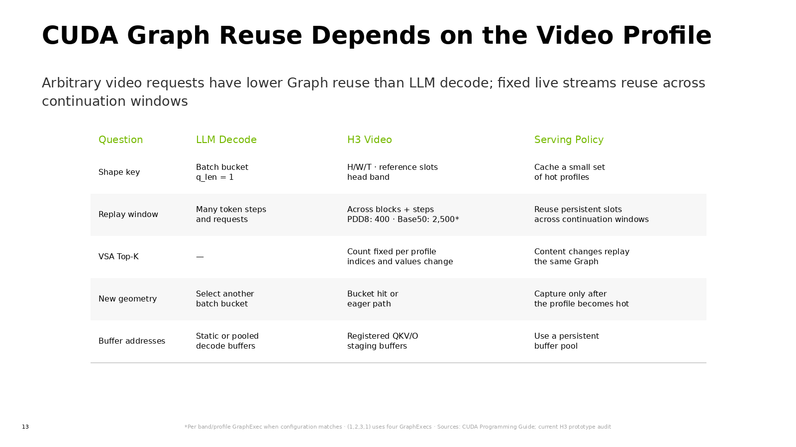

CUDA Graph for Head Pipelining
Two NVIDIA-style slides cover head-pipelined replay and shape-aware Graph reuse for video generation.
1 · CUDA Graph for Head Pipelining

2 · CUDA Graph Reuse Depends on the Video Profile

Two NVIDIA-style slides cover head-pipelined replay and shape-aware Graph reuse for video generation.
